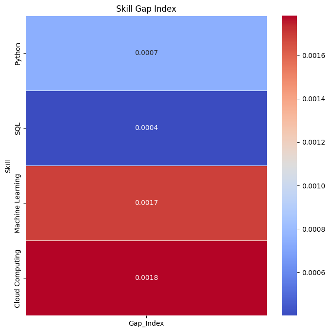

25/10/10 16:00:03 WARN SparkStringUtils: Truncated the string representation of a plan since it was too large. This behavior can be adjusted by setting 'spark.sql.debug.maxToStringFields'.
IT Skill Demand and Team Gap Analysis
it_jobs = pandas_cleaned[ (pandas_cleaned["NAICS_2022_2_NAME"] =="Information") | (pandas_cleaned["NAICS_2022_2_NAME"] =="Professional, Scientific, and Technical Services")][["NAICS_2022_2_NAME", "SPECIALIZED_SKILLS_NAME"]].copy()it_jobs["SPECIALIZED_SKILLS_NAME"] = it_jobs["SPECIALIZED_SKILLS_NAME"].astype(str)it_jobs["SPECIALIZED_SKILLS_NAME"] = it_jobs["SPECIALIZED_SKILLS_NAME"].str.replace("\n", " ")it_jobs["SPECIALIZED_SKILLS_NAME"] = it_jobs["SPECIALIZED_SKILLS_NAME"].str.strip()top_skills = ["Python", "SQL", "Machine Learning", "Cloud Computing"]job_skill_counts = Counter()for skill in top_skills: count = it_jobs["SPECIALIZED_SKILLS_NAME"].str.contains(skill, case=False).sum() job_skill_counts[skill] = countprint(" Most in-demand IT skills from job postings:")for skill, count in job_skill_counts.most_common():print(f"{skill} appears in {count} IT job postings")for skill in top_skills:if skill notin df_skills.columns: df_skills[skill] =0df_skills
Most in-demand IT skills from job postings:
SQL appears in 7498 IT job postings
Python appears in 4036 IT job postings
Machine Learning appears in 1578 IT job postings
Cloud Computing appears in 935 IT job postings
Python
SQL
Machine Learning
Cloud Computing
Name
Caroline
3
3
2
2
Bhargavi
3
3
3
2
Taylor
3
3
3
1
import seaborn as snsimport matplotlib.pyplot as pltcomparison_df = pd.DataFrame({"Skill": top_skills,"Job_Demand": [job_skill_counts[s] for s in top_skills],"Team_Skill": [df_skills[s].mean() for s in top_skills]})comparison_df["Gap_Index"] = comparison_df["Team_Skill"] / comparison_df["Job_Demand"]plt.figure(figsize=(8,8))sns.heatmap(comparison_df.set_index("Skill")[["Gap_Index"]], annot=True, cmap="coolwarm", fmt=".4f", linewidths=0.5)plt.title("Skill Gap Index")plt.ylabel("Skill")plt.savefig("Skill_GapIndex_heatmap.png")plt.show()

Which Skills Should Each Team Member Prioritize Learning?
Based on the analysis above, all three team members should prioritize Cloud Computing in order to improve upon their beginner levels. There are several ways that each team member can achieve this. The most accessible option is enrolling in online courses. For Cloud Computing, both Coursera and Codeacademy offer foundational courses on this topic, ranging from AWS specifically to platform agnostic overviews. To improve upon Machine Learning skills, team members can leverage online courses hosted on Udemy or Coursera. Both of these topics are taught through more formal avenues like certificate programs through universities, such as Stanford’s Machine Learning Course.
All members are rated as average in Python and SQL, but there is always room for improvement. This area is an opportunity for collaboration, as members can bring different skills to the table and help troubleshoot each other’s code. To formally improve upon skills, they can utilize online courses on Coursera, Codeacademy, or Data Camp. In many cities, there are in person class options as well. For example, General Assembly offers a variety of coding classes locally in NYC. Each team member should choose the most convenient method to continue learning and improve upon their skillset in order to be competitive in the job market.